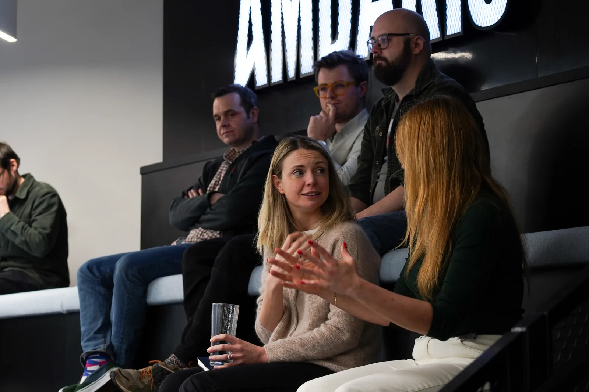
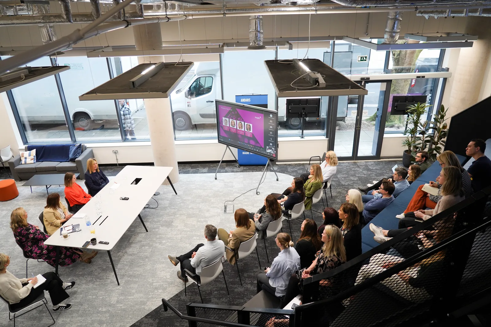
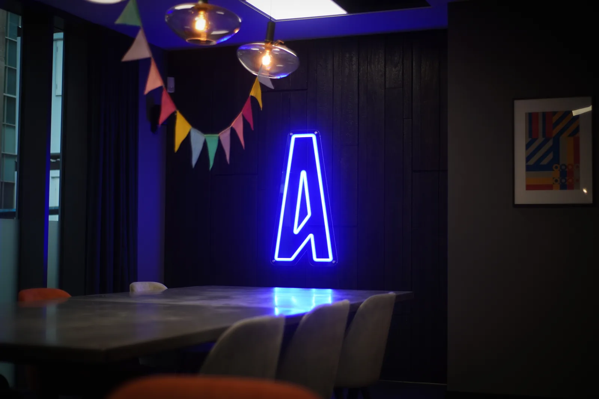
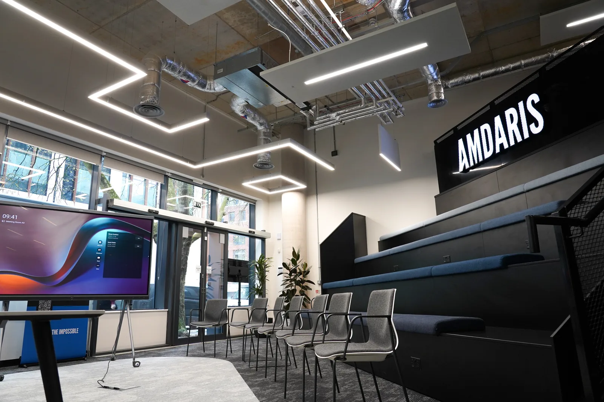
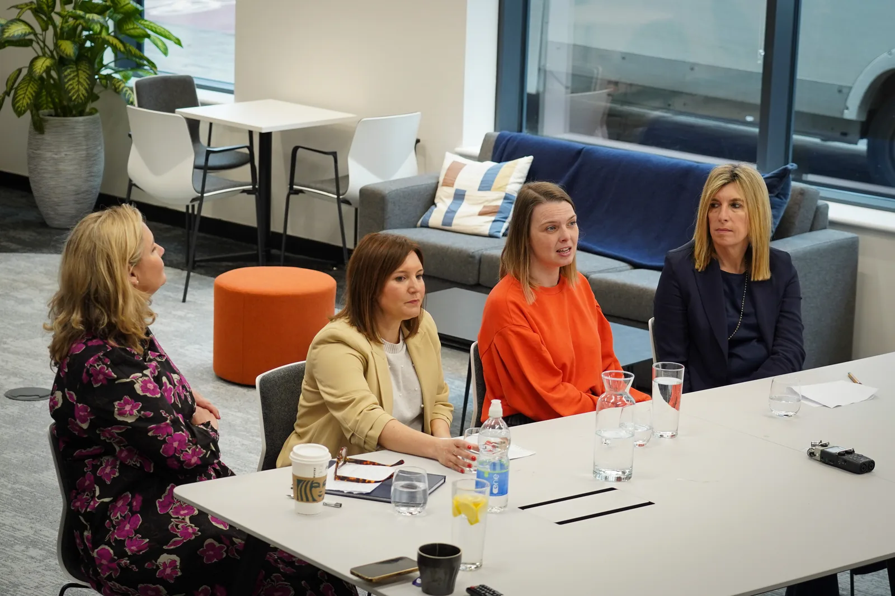
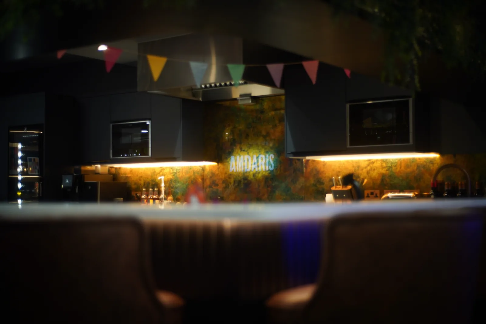

Marshall
Multimedia creative. Video, stills and design for brands that care how things look. London.
See the workMultimedia creative. Video, stills and design for brands that care how things look. London.
See the work










| 2019 | Exhibition World | Event coverage & interview films | ↗ |
| 2019 | ISE / AV+TV | Trade show daily coverage | ↗ |
| 2018 | Property Week | Editorial video series | ↗ |
| 2018 | Motor Trader | Awards & industry films | ↗ |
| 2018 | Packaging News | Awards coverage | ↗ |
| 2017 | Quality Food Awards | Ceremony film | ↗ |

Written, shot and cut as personal work. Everything on this page in one project: direction, camera, stills, design.
Watch ElectraI'm Ash — a multimedia creative working across video, stills, behind-the-scenes and graphic design. Most of my commercial work is for technology brands; the rest is whatever looks worth pointing a camera at.